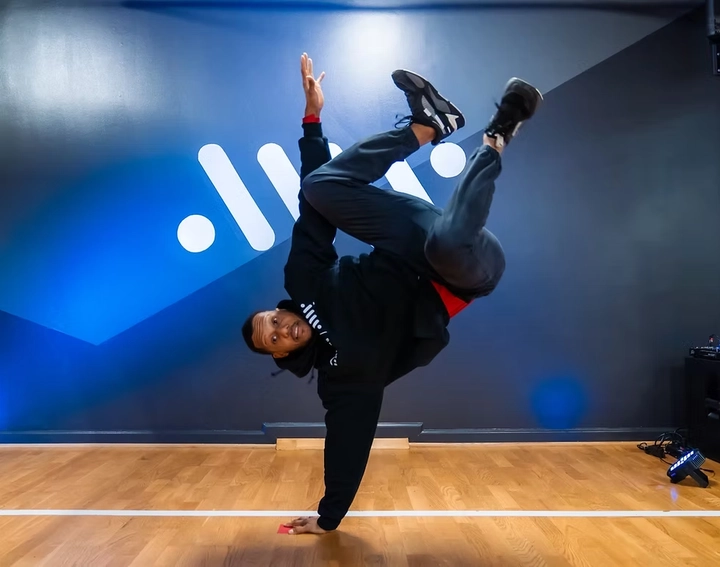
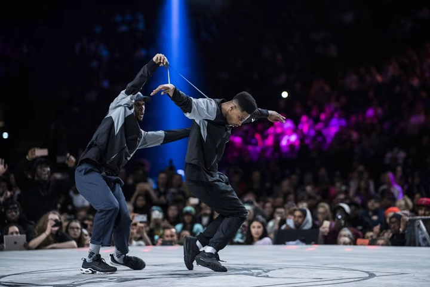
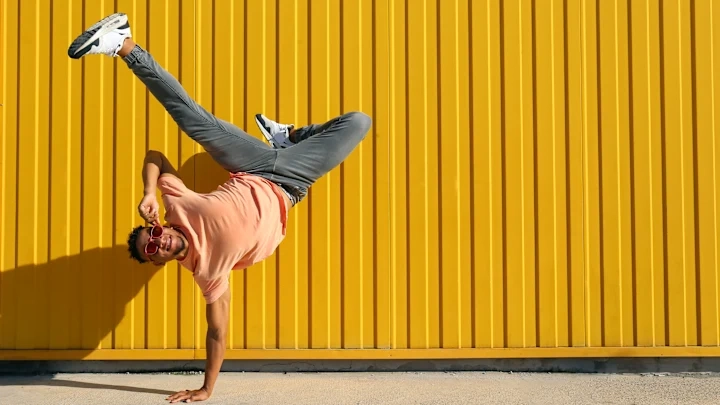
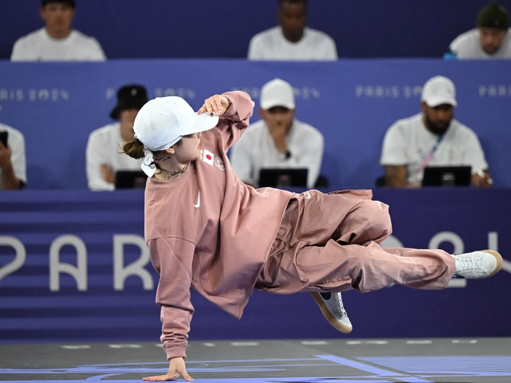

Breakdance – từ nghệ thuật đường phố đến Olympic
Breakdance, hay còn gọi là B-boying/B-girling, khởi nguồn từ những con phố ở Bronx, New York vào thập niên 1970, là một hình thức biểu diễn nghệ thuật đường phố gắn liền với văn hóa hip-hop. Ban đầu, nó là cách để giới trẻ thể hiện bản thân, giải tỏa năng lượng và xây dựng cộng đồng, kết hợp âm nhạc, nhịp điệu và vận động cơ thể một cách sáng tạo.
Ngày nay, breakdance không chỉ là một nghệ thuật biểu diễn mà còn là môn thể thao, nơi kỹ thuật, sức bền và khả năng sáng tạo được kết hợp một cách tinh tế. Sự phát triển không ngừng của breakdance đã đưa nó từ các góc phố đến sân khấu quốc tế và Olympic, minh chứng cho sức hấp dẫn toàn cầu của bộ môn này.
Bài viết này TrithucWorld sẽ phân tích 10 khía cạnh quan trọng của breakdance, từ lịch sử, kỹ thuật, văn hóa đến tương lai và ý nghĩa khi trở thành môn Olympic.
1. Nguồn gốc và lịch sử hình thành breakdance
Breakdance, còn gọi là B-boying hoặc B-girling, xuất hiện vào những năm 1970 trong cộng đồng người Mỹ gốc Phi và Latin tại Bronx, New York. Ban đầu, đây là hình thức biểu diễn đường phố, nơi thanh thiếu niên thể hiện bản sắc cá nhân, đồng thời tạo ra các cuộc thi “battles” nhằm tranh tài về kỹ thuật, nhịp điệu và sáng tạo. Mỗi vũ công đều phát triển phong cách riêng, dựa trên khả năng vận động cơ thể, sức bền và sự linh hoạt, tạo ra những màn trình diễn độc đáo và cá nhân hóa.
Những động tác đầu tiên của breakdance chịu ảnh hưởng mạnh từ các bộ môn như kung fu, capoeira, nhảy múa truyền thống và các điệu nhảy Latin, nhưng qua thời gian đã được sáng tạo và biến đổi thành phong cách đặc trưng, độc lập. Các bước nhảy không chỉ là vận động thể chất mà còn là hình thức ngôn ngữ cơ thể, biểu đạt cảm xúc, câu chuyện cá nhân và tinh thần cộng đồng.

Khi hip-hop lan rộng, breakdance cũng theo đó bước ra khỏi Bronx, trở thành hiện tượng văn hóa toàn nước Mỹ và sau đó là quốc tế. Nó xuất hiện trong các bộ phim, video ca nhạc, chương trình truyền hình và sự kiện nghệ thuật, giúp nâng tầm breakdance từ nghệ thuật đường phố trở thành một biểu tượng văn hóa toàn cầu, đồng thời mở ra cơ hội cho các vũ công chuyên nghiệp và các cuộc thi quốc tế.
Ngoài vai trò nghệ thuật, breakdance còn là công cụ xã hội, giúp thanh thiếu niên phát triển kỹ năng giao tiếp, xây dựng cộng đồng và tạo ra không gian lành mạnh để thể hiện bản thân. Sự lan tỏa của breakdance chứng minh rằng một hình thức nghệ thuật khởi nguồn từ đường phố có thể trở thành hiện tượng toàn cầu, vừa mang giá trị giải trí vừa mang ý nghĩa giáo dục và xã hội sâu sắc.
2. Những yếu tố cơ bản trong breakdance: Toprock, Footwork, Power Moves, Freezes
Breakdance bao gồm nhiều yếu tố cơ bản, mỗi yếu tố đóng vai trò quan trọng trong việc xây dựng một màn trình diễn hoàn chỉnh. Toprock là bước nhảy đứng mở màn, nơi vũ công thể hiện nhịp điệu, phong thái và sự tự tin. Đây là phần tạo ấn tượng đầu tiên, giúp khán giả cảm nhận được cá tính và phong cách riêng của từng B-boy hoặc B-girl.
Footwork tập trung vào các bước di chuyển linh hoạt trên sàn nhà, thể hiện khả năng kiểm soát cơ thể và tốc độ. Footwork không chỉ là kỹ thuật vận động mà còn là cách để vũ công tương tác với không gian xung quanh, tạo ra những chuỗi động tác liên tục, uyển chuyển nhưng vẫn đầy năng lượng.
Power Moves là những động tác mạnh mẽ, quay tròn trên sàn hoặc trên tay, đòi hỏi sức mạnh cơ bắp, sự phối hợp nhịp nhàng và can đảm. Những kỹ thuật như windmill, headspin hay flare không chỉ thu hút người xem mà còn là thước đo kỹ năng và sức bền của vũ công. Mỗi Power Move đều cần luyện tập hàng giờ liền để đạt sự hoàn hảo và an toàn.
Cuối cùng, Freezes là những động tác dừng đột ngột ở tư thế ấn tượng, thể hiện khả năng kiểm soát cơ thể tối đa và tạo điểm nhấn trong màn trình diễn. Freezes thường kết thúc một chuỗi di chuyển, giúp vũ công nhấn mạnh đỉnh cao sáng tạo và kỹ thuật cá nhân, đồng thời gây ấn tượng mạnh với khán giả và đối thủ trong các battle.
Sự kết hợp hài hòa giữa Toprock, Footwork, Power Moves và Freezes tạo nên một màn trình diễn breakdance đầy sáng tạo, kịch tính và nghệ thuật, nơi mỗi vũ công không chỉ trình diễn kỹ thuật mà còn kể một câu chuyện qua từng chuyển động cơ thể.
3. Văn hóa hip-hop và vai trò của breakdance trong cộng đồng đường phố
Breakdance là một phần không thể tách rời của văn hóa hip-hop, cùng với rap, graffiti và DJing. Nó không chỉ là hình thức giải trí mà còn là công cụ thể hiện bản sắc cá nhân, nơi thanh thiếu niên trình diễn kỹ năng, sáng tạo và cá tính của mình.
Trong cộng đồng đường phố, breakdance đóng vai trò xây dựng mối quan hệ xã hội và tinh thần cộng đồng, thông qua các “battles” hay cuộc thi địa phương. Những màn thi đấu này vừa tạo cơ hội để học hỏi kỹ thuật, vừa thúc đẩy sự tôn trọng lẫn nhau và cạnh tranh lành mạnh.

Ngoài ra, breakdance còn có tác động giáo dục xã hội tích cực, giúp thanh thiếu niên rèn luyện kỷ luật, kiên nhẫn, sức bền và khả năng hợp tác. Các chương trình cộng đồng và trường học ngày càng sử dụng breakdance như một công cụ để giải tỏa năng lượng, phát triển kỹ năng xã hội và định hướng sáng tạo.
4. Các phong cách và trường phái breakdance trên thế giới
Breakdance phát triển đa dạng theo văn hóa và địa lý. Tại Mỹ, phong cách Bronx cổ điển tập trung vào sự linh hoạt, sáng tạo cá nhân và kỹ thuật vận động cơ thể, trong khi tại Pháp và Nga, các nhóm vũ công phát triển kỹ thuật footwork và Power Moves phức tạp, chú trọng sự chính xác và tốc độ.
Ở châu Á, Nhật Bản và Hàn Quốc nổi bật với phong cách mềm mại nhưng vẫn đầy sức mạnh, kết hợp nhịp điệu hiện đại và kỹ thuật sáng tạo. Sự khác biệt này không chỉ tạo ra nét độc đáo mà còn kích thích giao lưu văn hóa khi các nhóm quốc tế học hỏi lẫn nhau thông qua các cuộc thi hoặc hội thảo.
Sự đa dạng này chứng tỏ breakdance không chỉ là môn nghệ thuật cá nhân mà còn là hiện tượng toàn cầu, nơi nhiều trường phái khác nhau giao thoa, thúc đẩy sự sáng tạo không ngừng và tạo ra những màn trình diễn độc đáo trên sân khấu quốc tế.
5. Những gương mặt vũ công nổi tiếng và ảnh hưởng của họ
Các vũ công như Crazy Legs, Ken Swift và Storm được xem là những biểu tượng, đóng góp quan trọng trong việc định hình breakdance hiện đại. Họ không chỉ nổi bật trong các cuộc thi mà còn truyền cảm hứng và đào tạo thế hệ mới, nâng cao nhận thức về giá trị nghệ thuật của breakdance.
Những B-boy/B-girl nổi tiếng này thường là người tiên phong trong sáng tạo các động tác mới, kết hợp Power Moves, footwork và freezes, đồng thời quảng bá văn hóa hip-hop ra toàn cầu thông qua tour biểu diễn và video hướng dẫn.
Họ cũng là minh chứng sống cho sức mạnh của breakdance trong việc thúc đẩy sự phát triển cá nhân, tạo cơ hội nghề nghiệp và giao lưu văn hóa. Tên tuổi và phong cách của họ trở thành tiêu chuẩn để các vũ công trẻ học hỏi, đồng thời đóng vai trò là cầu nối giữa nghệ thuật đường phố và các sân khấu quốc tế.
6. Các cuộc thi breakdance quốc tế và sự phát triển của hệ thống thi đấu
Breakdance đã trở thành môn thể thao cạnh tranh toàn cầu với nhiều cuộc thi uy tín như Red Bull BC One, Battle of the Year hay World B-Boy Series. Những sự kiện này không chỉ đánh giá kỹ thuật mà còn tôn vinh sáng tạo, phong cách và khả năng trình diễn của từng vũ công.
Các cuộc thi quốc tế tạo ra tiêu chuẩn chung, giúp vũ công từ nhiều quốc gia học hỏi lẫn nhau và nâng cao kỹ năng. Đồng thời, hệ thống thi đấu chuyên nghiệp còn thúc đẩy sự chính thức hóa breakdance, từ một nghệ thuật đường phố trở thành môn thể thao được công nhận rộng rãi.
Hệ thống thi đấu còn kết hợp giám khảo chuyên môn, chấm điểm kỹ thuật và phong cách, đồng thời tổ chức các workshop và khóa đào tạo, giúp vũ công trẻ tiếp cận các kỹ thuật tiên tiến, tăng cường sự hợp tác quốc tế và lan tỏa văn hóa hip-hop toàn cầu.
7. Breakdance trong nghệ thuật biểu diễn và truyền thông đại chúng
Breakdance không chỉ tồn tại trên đường phố mà còn xuất hiện mạnh mẽ trong nghệ thuật biểu diễn chuyên nghiệp, từ các show sân khấu, chương trình truyền hình đến video ca nhạc. Sự xuất hiện này giúp nâng tầm nghệ thuật đường phố thành hình thức giải trí hiện đại, thu hút khán giả toàn cầu.

Các chương trình truyền thông còn kết hợp kỹ thuật ánh sáng, âm nhạc và hiệu ứng đặc biệt, biến breakdance thành trải nghiệm thị giác và âm thanh sống động. Điều này giúp vũ công không chỉ trình diễn kỹ năng mà còn kể câu chuyện, truyền tải cảm xúc đến khán giả.
Nhờ truyền thông đại chúng, breakdance được nhận diện rộng rãi hơn, trở thành biểu tượng văn hóa hip-hop, tạo cơ hội cho các thế hệ vũ công mới phát triển sự nghiệp quốc tế và kết nối cộng đồng toàn cầu.
8. Breakdance và giáo dục: Tác động tích cực đến trẻ em và thanh thiếu niên
Breakdance được ứng dụng trong các chương trình giáo dục, đặc biệt dành cho trẻ em và thanh thiếu niên, nhằm phát triển kỹ năng xã hội, thể chất và tư duy sáng tạo. Việc luyện tập nhịp điệu, phối hợp động tác và thực hiện các Power Moves giúp nâng cao sức khỏe, sự linh hoạt và khả năng tập trung.
Ngoài ra, breakdance còn rèn luyện kỷ luật, tinh thần hợp tác và quản lý cảm xúc, nhờ đó trẻ em học được cách kiểm soát bản thân và xây dựng thói quen lành mạnh. Các chương trình cộng đồng sử dụng breakdance để giảm nguy cơ trẻ em tham gia các hành vi tiêu cực, đồng thời tạo môi trường sáng tạo và vui vẻ.
Giáo dục thông qua breakdance còn thúc đẩy văn hóa giao tiếp, tự tin và năng lực biểu diễn, giúp trẻ em phát triển toàn diện, đồng thời nhận thức về giá trị văn hóa hip-hop và sự đa dạng nghệ thuật.
9. Quyết định đưa breakdance vào Olympic: Ý nghĩa và thách thức
Quyết định đưa breakdance vào Olympic Paris 2024 là bước ngoặt lịch sử, công nhận breakdance là môn thể thao quốc tế. Đây không chỉ mang lại cơ hội cho các vũ công chuyên nghiệp mà còn tôn vinh văn hóa đường phố trên đấu trường thể thao toàn cầu.

Tuy nhiên, việc này cũng đặt ra nhiều thách thức, như thiết lập tiêu chuẩn thi đấu, phân loại vận động viên và đảm bảo tính công bằng trong chấm điểm. Breakdance cần duy trì yếu tố sáng tạo cá nhân, nhưng vẫn phải đáp ứng các yêu cầu thể thao nghiêm ngặt.
Việc kết hợp giữa nghệ thuật và thể thao đòi hỏi ban tổ chức và cộng đồng vũ công hợp tác chặt chẽ để cân bằng giữa tự do sáng tạo và tiêu chuẩn thi đấu, từ đó đưa breakdance trở thành môn thể thao bền vững và được quốc tế công nhận.
10. Tương lai của breakdance: Sự kết hợp giữa nghệ thuật, thể thao và công nghệ
Tương lai của breakdance hứa hẹn sự giao thoa giữa nghệ thuật, thể thao và công nghệ, nơi kỹ thuật tiên tiến được kết hợp với âm nhạc, ánh sáng và hiệu ứng kỹ thuật số. Các vũ công có thể sử dụng công nghệ thực tế ảo (VR) hoặc augmented reality (AR) để tạo trải nghiệm biểu diễn sống động và tương tác hơn.
Ngoài ra, breakdance sẽ tiếp tục mở rộng trên sân khấu quốc tế, các cuộc thi Olympic và nền tảng trực tuyến, giúp các thế hệ trẻ tiếp cận dễ dàng và phát triển kỹ năng sáng tạo. Sự kết hợp này không chỉ thúc đẩy phát triển cá nhân mà còn lan tỏa văn hóa hip-hop toàn cầu, tạo cơ hội giao lưu và học hỏi giữa các cộng đồng quốc tế.
Với sự phát triển liên tục, breakdance sẽ không chỉ là nghệ thuật đường phố hay môn thể thao, mà còn là biểu tượng của sáng tạo, văn hóa và kết nối toàn cầu, mở ra một kỷ nguyên mới cho nghệ thuật biểu diễn và thể thao hiện đại.